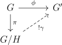

Groups are an algebraic theory with \(1\) nullary (denoted \(1\)), unary (denoted \(^{-1}\)), and binary (denoted \(*\)) operation, such that \(*\) is associative, \(^{-1}\) is a left and right inverse with respect to \(*\), and \(1\) is a left and right identity with respect to \(*\). One sometimes uses additive notation \(0,-,+\) instead of \(1,^{-1},*\), and also sometimes leaves out the \(*\). We can consider the category of models of this theory in \(\Set \) to get the category of groups, \(\Grp \). This category is complete and cocomplete, with product \(\times \) called the direct product, coproduct \(*\) called the free product. A group is nothing more than a one object category where every arrow is an isomorphism, thus certain concepts for categories and groups coincide.
As is the case for any algebraic theory, we have facts such as a bijective group homomorphism is an isomorphism. Some remarks about groups: they can be seen as semigroups with an identity element and an inverse. Indeed, if a left and right identity exists, it is unique, and likewise for inverses. Every group is naturally isomorphic to its opposite group via the map \(x \to x^{-1}\).
Here is the main example of a group. Given an object \(O\) in a category, we can consider its automorphisms \(\Aut (O)\), namely the isomorphisms from it to itself, with the operation as composition. Now a group \(G\) can act on one of these objects. One distinguished between left and right actions by saying that a right action is an action of the opposite group. In particular, an action is a just a homomorphism \(\phi \) from \(G\) to \(\Aut (O)\). Generally when one says group action, \(O\) is a set, however another important example is when \(O\) is a vector space, in which case an action is called a representation.
There is some standard terminology when discussing actions. An action is faithful if the corresponding functor is faithful. For an action on a set, the orbit of an element is the set of elements that the group elements send it to. In particular, we say the action is transitive if there is one orbit. The fixed points of an action \(\phi \) is the equalizer of the image of \(G\). The stabilizer of a morphism \(h:B \to O\) (denoted \(S_\phi (h)\)) is the subgroup of \(G\) such that for each element \(g\) in the subgroup, \(g \circ h = h\).
Transitive set actions are extremely simple, and in fact (up to a point) correspond to subgroups of \(G\).
There are two set actions of a group \(G\) on itself we will now consider. First, the group acts on itself by left multiplication. This action is both faithful and transitive, so we say it is simply transitive. In particular, if \(S_{|G|}\) is the automorphism group of \(G\), which we call the symmetric group on \(|G|\) elements, then we get Cayley’s theorem.
Proposition 1.1 (Cayley’s Theorem). Every group is a subgroup of \(S_{|G|}\) which in particular is a finite symmetric group if \(G\) is finite.
Every subgroup \(H\) acts on \(G\) by left or right multiplication, and the quotient space is called the set of left (denoted \(H\backslash G\)) or right (denoted \(G/H\)) cosets. We often denote the coset a particular element \(b\) is in by \([b]\). \(G\) acts transitively on the cosets via left or right multiplication. In fact, by varying \(H\), we actually get all of the transitive actions. This is the orbit stabilizer theorem.
Proposition 1.2 (Orbit-Stabilizer Theorem). The category of pointed transitive set actions is equivalent to the category of subgroups of \(G\).
Proof. In one direction, we take a pointed transitive action to the stabilizer of the point, and in the other direction we take a subgroup of \(G\) and consider the left action on \(G/H\). It is an easy exercise to verify this is an equivalence, and see what the functors do on maps. □
Given a group action \(G\), and a (usually injective) map \(H\to G\), we can consider let \(H\) act via restriction. Restriction has an adjoint called induction. Restricting to \(H\) partitions the action into new orbits, and to see what the new orbit of a point \(p\) is, note its stabilizer is just \(S(p)\cap H\). We can translate this into the language of groups as follows: Fixing a base-point, our action becomes the right action of \(G\) on \(G/K\) some subgroup \(K\), and the orbits become double cosets, denoted \(HgK\), and each double coset breaks up into disjoint right cosets of \(K\). We can compute the size of the double coset of \(x\) to be \(|K||H|\frac{1}{|K\cap xHx^{-1}|}\) under the assumption that everything is finite.
The second important action of \(G\) on itself is actually an action as a group, called conjugation. In particular, \(g\) goes to the automorphism of \(G\) sending \(h\) to \(ghg^{-1} = h^g\). The fixed points of the action is a subgroup called the center, denoted \(Z(G)\). One says that \(G\) is abelian if \(Z(G) = G\). For the conjugation action, the orbits are called conjugacy classes (denoted \(Cl(a)\), and the stabilizers are called centralizers, denoted \(C_G(S)\) where \(S\) is a subset.
Additionally, \(G\) acts on its set of subgroups by conjugation, and the stabilizers here are called the normalizers, and denoted \(N_G(H)\).
Definition 1.3. A subgroup \(H\) of \(G\) is normal (denoted \(H \triangleleft G\)) if \(H\) as a set is fixed by conjugation (we denote this \(gHg^{-1} = H, \forall g \in G\)). One example of a normal subgroup is the center. Another example is the kernel of a homomorphism, ie. all the elements that are sent to the identity. In fact, as we will see below, when \(H\) is normal, \(G/H\) can be made into a group such that the projection \(G \to G/H\) is a homomorphism with kernel \(H\).
Proposition 1.4. The following are equivalent:
1. \(H\) is normal
2. \(G/H = H\backslash G\) as quotients of \(G\).
3. The operation \(*\) descends to \(G/H\).
Proof. \(1 \implies 2\): If \(H\) is normal, then \(Hc\)= \(cHc^{-1}c = cH\). \(2 \implies 3\): We define \(cH*dH = cdH\), which is a group since \(cHdH = cdHH = cdH\) as sets. \(3 \implies 1\): \(H\) is the kernel of the natural projection \(G \to G/H\) so is normal. □
Another important property of kernels is in the next lemma.
Lemma 1.5. A group homomorphism is injective iff the kernel is trivial.
Proof. Certainly a homomorphism is injective if the kernel is trivial. Conversely if the kernel is trivial and \(\phi (g) = \phi (h)\), then \(\phi (gh^{-1})\) is in the kernel so \(g = h\). □
Now we will prove the universal property of quotients.
Proposition 1.6 (Universal property of quotients). If \(G \to G'\) is a homomorphism with \(H\) in the kernel, then it uniquely factors through \(G/H\) as in the diagram

Proof. If we had such a homomorphism \(\gamma \), \(\gamma (cH) = \phi (c)\), so it is unique. Moreover, it is easy to see that this is a well-defined homomorphism since \(H\) is in the kernel and is normal. □
Corollary 1.7 (First Isomorphism Theorem). The induced map \(G/\ker (\phi )\to \im (\phi )\) is an isomorphism.
Proof. Indeed the kernel of the induced map is trivial by definition so the map is injective, moreover it is surjective by definition of the image. □
Corollary 1.8 (Second Isomorphism Theorem). If \(H,N\) are subgroup of \(G\), \(N\) normal, there is a canonical isomorphism \(HN/N \cong H/(N\cap H)\).
Proof. The canonical map \(H \to HN/H\) is surjective with kernel \(N \cap H\). □
Corollary 1.9 (Third Isomorphism Theorem). If \(H,N\) are normal in \(G\), \(H \subset N\), then \((G/H)/(N/H) \cong G/N\)
Proof. The projection \(G \to G/H \to (G/H)/(N/H)\) is surjective with kernel \(N\). □
Corollary 1.10 (Lattice Isomorphism Theorem). There is an isomorphism between the lattice of subgroups containing \(N\), a normal subgroup of \(G\), and the subgroups of \(G/N\). Moreover normal subgroups correspond to normal subgroups.
Proof. Given a subgroup containing \(N\), project it to \(G/N\), and conversely given a subgroup of \(G/N\), take its preimage. Then it is straightforward to see these are inverses that preserve the lattice structure. □
Proposition 2.1 (Lagrange’s Theorem). If \(H\) is a subgroup of \(G\) with \(G\) finite, then \(|H|\) divides \(|G|\).
Proof. \(G\) acts transitively on each coset in \(G/H\), which has size \(H\). □
In particular \(|G/H| = |G|/|H|\) if \(G\) finite. We call \(|G/H|:=[G:H]\) the index of \(H\) in \(G\). Note that index is multiplicative.
Proposition 2.2. If \(H,N \triangleleft G\), \(H\cap N ={1}\), \(HN = G\), then \(G \cong N \times H\).
Proof. We have \(G/H \cong N\) and \(G/N \cong H\) so the product of the projections gives a map \(G \to N \times H\), which is bijective as \(HN = G\) and \(H\cap N ={1}\). □
Lemma 2.3. If \(H,N\subset G\) are subgroups, and either \(H,N\) is normal, then \(HN\) is a subgroup. If \(H,N\) are normal, then \(HN\) is normal.
Proof. For the first statement look at the second isomorphism theorem, and for the second statement just note \(HN/N\) is normal in \(G/N\) since \(H\) is normal in \(G\). □
Lemma 2.4. If \(H,N\subset G\) are subgroups which commute with each other, then \(HN\) is a subgroup and \(|HN| = \frac{|H||N|}{|H\cap |N|}\).
Proof. \(h_1n_1h_2n_2 = h_1h_2n_1n_2\) shows that \(HN\) is a subgroup. We have a homomorphism from \(H\times N\) to \(HN\) sending \((h,n) \mapsto hn\) which is surjective, with kernel in bijection with pairs \((h,n)\) such that \(hn^{-1}=1\). □
Proposition 2.5 (Class Equation). \(|G| = |Z(G)| + \sum _{|Cl|>1}|Cl|\).
Proof. This is just the statement that the conjugation action partitions \(G\) into orbits. □
Theorem 2.6 (Classification of finitely generated abelian groups). Every finitely generated abelian group is uniquely of the form \(\ZZ ^r\oplus \bigoplus _1^k\ZZ /n_i\ZZ \) with \(n_i|n_{i+1}\).
Proof. This is immediate after realizing that abelian groups are \(\ZZ \)-modules. □
Theorem 2.7 (Cauchy’s Theorem). If \(p||G|\), then there is an element of order \(p\) in \(G\).
Proof. WLOG we may assume that \(p\nmid |Z(G)|\) as otherwise either \(G\) is abelian in which case Theorem 2.6 makes this obvious, or we can induct, and inspect \(Z(G)\) instead. Now by looking at the class equation, we must have some nontrivial conjugacy class with \(p\) not dividing its size, so we can induct by looking at the corresponding centralizer. □
Lemma 2.8. If \(H\) is a proper subgroup of \(G\) with \(|G| \nmid [G:H]!\), then \(G\) is not simple.
Proof. \(G\) acts on \(G/H\) via left multiplication, this action is given by a homomorphism to \(S_{G/H}\), but by our assumption this must have a nontrivial kernel, which is proper as the action of \(G\) is nontrivial. □
In particular, infinite simple groups cannot have proper subgroups of finite index.
Lemma 2.9. \([G:Z(G)]\) cannot be prime.
Proof. If the center is not everything, then the centralizer of an element not in the center is a subgroup strictly between \(G\) and \(Z(G)\). □
A \(p\)-Sylow subgroup of a group \(G\) is a maximal \(p\)-subgroup, ie. a maximal subgroup that is killed by powers of \(p\) or a maximal subgroup of order \(p^k\).
Theorem 3.1 (Sylow Theorems). Let \(G\) be a finite group with \(|G| = mp^k\) with \(p\nmid m\). Then if \(n_p\) is the number of \(p\)-Sylows, \(n_p \equiv 1 \pmod p,\) and \(n_p | m\). Moreover, \(G\) acts transitively on the set of \(p\)-Sylows via conjugation, and the size of each \(p\)-Sylow is \(p^k\).
Proof. If \(P\) is a \(p\)-Sylow, \(N_G(P)/P\) cannot have any nontrivial \(p\)-groups or else their preimage in \(N_G(P)\) would be an even larger \(p\)-group, so by Cauchy’s Theorem \(p \nmid [N_G(P):P]\) and for any \(p\)-group \(Q\), \(Q\cap N_G(P) = Q\cap P\). Then let \(A\) be the set of all conjugates of \(P\), which are also \(p\)-Sylows. \(P\) acts on this by conjugation, and by our fact about normalizers, there is a unique fixed point, so by Proposition 1.2 all the other orbits have size dividing \(p\), and \(|A| = [G:N_G(P)]\equiv 1 \pmod p\).Then \(p\nmid [G:N_G(P)]\) so \(|P| = p^k\). Finally for any \(p\)-subgroup \(Q\), its action on \(X\) must have a fixed point, so it is in a conjugate of \(P\). \(n_p|m\) as \(n_p = [G:N_G(P)]|[G:P] = m\). □
Corollary 3.2. Let \(G\) be a group of order \(mp^k\) with \(k(p-1)>m\). Then \(G\) is not simple.
Proof. Apply Lemma 2.8 to the existence of \(p\)-Sylows, using the fact that \(p^k \nmid m!\). □
Definition 4.1. A group \(G\) is solvable iff there is a sequence \({1}=G_0\triangleleft G_1,\dots ,\triangleleft G_n = G\) with each quotient \(G_i/G_{i-1}\) abelian.
Definition 4.2. The commutator subgroup \([G,G]\) is the subgroup of \(G\) generated by all elements of the form \(aba^{-1}b{-1}\).
More generally, \([S,P]\) is the subgroup generated by the commutators of elements of \(S\) and \(P\) when \(S,P\) are subsets of \(G\). The commutator subgroup is a characteristic subgroup, ie. it is invariant under all automorphisms (so is the center). In particular it is normal, and the quotient \(G/[G,G]\) is abelian since \([c][d] = [cd][d^{-1}c^{-1}dc] = [d][c]\). Moreover \([G,G]\) is in the kernel of any homomorphism to an abelian group, so we have the universal property:
Proposition 4.3 (Universal property of the commutator subgroup). Given a homomorphism from \(G\) to an abelian group, \(H\), it uniquely factors through \(G/[G,G]\).
Proposition 4.4. Let \(N\triangleleft G\) be a normal subgroup. Then \(G\) is solvable iff \(G/N\) and \(N\) are solvable.
Proof. If \(G\) is solvable, then looking at \(N\cap G_i\) shows \(N\) is solvable, and looking at \(G_iN/N\) shows that \(G/N\) is solvable. Conversely if \(G/N\) and \(N\) are solvable, we can use the Lattice Isomorphism theorem to tack together the \((G/N)_i\) and the \(N_j\) to see that \(G\) is solvable. □
Proposition 4.5. Let \(G^{(i)} = [G^{(i-1)},G^{(i-1)}]\), \(G^0 = G\). Then \(G\) is solvable iff some \(G^{(j)}\) is trivial.
Proof. Certainly if some \(G^{(j)}\) is trivial, the sequence \(G^{(i)}\) shows that \(G\) is solvable. conversely, if \(G\) is solvable via the sequence \(G_i\), then \(G^{(i)} \subset G_i\), which is seen by induction and Proposition 4.3. □
The series \(G^{(i)}\) is known as the derived series.
Definition 5.1. A group \(G\) is nilpotent if there is a sequence (called a central series) \({1}=G_0\triangleleft G_1,\dots ,\triangleleft G_n = G\) with each \(G_i\) central (ie. in the center) in \(G/G_{i-1}\).
The length of the shortest central series, \(n\) is called the nilpotent class of \(G\). For example, abelian groups are those whose nilpotent class is \(1\). The nilpotent class measures how far away from being abelian \(G\) is.
There are two canonical “extremal” central series for a group, the upper and lower central series.
Definition 5.2. The lower central series of a group \(G\) is defined by \(G_1 = G, G_{i+1} = [G,G_i]\).
Since \(c[g,h]c^{-1} = [cgc^{-1},chc^{-1}]\), by induction we see \(G_i\) is normal, and it is clear that for any normal subgroup \(H \triangleleft G\), \(H\) is central in \(G/[G,H]\).
Definition 5.3. The upper central series of a group \(G\) is defined by \(G^1 = \{1\}, G^{i+1}/G^i = Z(G/G^i)\).
It is clear that if either some \(G_i = \{1\}\) or some \(G^i = G\), then \(G\) is nilpotent.
Moreover we can observe the following two basic results, which explain why the lower and upper central series are extremal.
Proposition 5.4. If \(1=H^0\triangleleft ,\dots ,\triangleleft H^n = G\) is a central series, then \(H^i\subset G^i\).
Proof. This follows from induction since if \(H^i \subset G^i\), then \(H^{i+1}\subset Z(G/H_i) \subset Z(G/G_i) = G^{i+1}\). □
Proposition 5.5. If \(G=H_0\triangleright ,\dots ,\triangleright H_n = \{1\}\) is a central series, then \(H_i \supset G_i\).
Proof. This follows from induction and the fact that if \(H_i \supset G_i\), then \(H_{i+1} \supset [G,H_{i}] \supset [G,G_i] = G_{i+1}\). □
Corollary 5.6. For a nilpotent group, the lengths of the upper and lower central series are the nilpotent classes of \(G\). In particular a group is nilpotent iff the two central series stabilize at \(G\) and \(\{1\}\).
Proof. The previous two propositions imply they are minimal central series. □
Proposition 5.7. Nilpotent groups are solvable.
Proof. Let \(G^{i+1}/G^{i}\) is abelian as it is the center of \(G/G^{i}\). □
Lemma 5.8. If \(g,h\) are relatively prime order in a nilpotent group \(G\), then they commute.
Proof. We can induct on nilpotent class. It then suffices to show that if this holds for \(G/Z(G)\), then it holds for \(G\). If \(g,h\) are order \(a,b, (a,b) = 1\), then \([g,h]\) is in \(Z(G)\) by induction. By induction again, we have \([g^n,h] = g^{n-1}[g,h]hg^{1-n}h^{-1}=[g,h]^n\), so we see that the order of \([g,h]\) divides that of \(g,h\), so \([g,h]=1\). □
Theorem 5.9. The finite nilpotent groups are products of \(p\)-groups.
Proof. Finite \(p\)-groups have nontrivial center by the class equation, and since quotients of \(p\)-groups are \(p\)-groups, they are nilpotent by induction. For the converse, the previous lemma shows that all the \(p\)-Sylows for different \(p\)s commute with each other, so by Lemma 2.4 we are done. □
Sometimes we have an exact sequence of groups \(1 \to N \to G \to H \to 1\), that splits, i.e. there is a section of the projection \(G \to H\). In this situation we write \(G \cong N \rtimes _\phi H\) and say that \(G\) is the semidirect product of \(N\) and \(H\). Indeed, \(G\) can be recovered from \(N\) and \(H\) and \(\phi \), the map \(H \to \Aut (N)\) given by conjugation by \(h\). namely, note that \(NH = G\) and \(N\cap H = e\), so we can identify the elements of \(N \times H\) with \(G\) via \((n,h) \to nh\). Now we have \((n,h)(n',h')=nhn'h' = n(hn'h^{-1})hh' = (n\phi (h)(n'),hh')\), so indeed \(N,H,\phi \) are enough data. Conversely any such \(\phi \) gives a group structure on the set \(G \times H\).
Lemma 6.1. If the map \(\phi : H \to \Aut (N)\) changes by an automorphism of \(H\) or by conjugation in \(\Aut (N)\), then the group \(N \rtimes _\phi H\) will not change up to isomorphism.
Proof. The first change obviously doesn’t change anything, and the second corresponds to changing \(N\) by an automorphism. □
The free group construction on a set \(I\) is the group obtained from applying the left adjoint of the forgetful functor \(\Grp \to \Set \). It can be described as words in the letters \(I\) and their inverses, where we can cancel elements with their inverses if they appear next to each other, and multiplication is given by concatenation. We often like to write a group \(G\) as quotients of a free group. A way to do this is as follows: choose generators \(g_\alpha , \alpha \in I\) of \(G\) to determine a surjective map \(F_I \to G\). We can find elements \(r_\beta \) (words in the \(g_\alpha \)) of \(F_I\) that normally generate the kernel, meaning that the smallest normal subgroup that contains them is the kernel. Then we can write \(G = \langle g_\alpha | r_\beta \rangle \), and we can describe \(G\) as words in the \(g_\alpha \), where we are allowed to insert and remove any \(r_\beta \) to the word.
As an example, let’s describe the group \(\ZZ ^2\). It is the abelianization of \(F_2\), the free group on two generators, so we can describe it as \(\langle a,b|[a,b]\rangle \). Then whenever \(ab\) appears in a word, we can replace it with \(ab[a,b]^{-1} = ba\), so indeed \(a\) and \(b\) commute as we might expect.
We say that a group it cyclic if it has \(1\) generator. The free group on one element is \(\ZZ \), so we see all the cyclic groups are \(\ZZ /n\ZZ = \langle a|a^n\rangle \) for \(n \in \ZZ \), which we also denote \(C_n\) when \(n \neq 0\).
As another example, lets consider the symmetry group of a regular \(n\)-gon, a group we will call \(D_n\). It is generated by two elements \(a\), a reflection around an axis, and \(b\), a rotation by \(\frac{2\pi }{n}\). Note that we have the relations \(a^2,b^n,(ab)^2\). Indeed \(D_n = \langle a,b|a^2,b^n,(ab)^2\rangle \), as we can compute the number of elements of each to be \(2n\), by observing that any word can be reduced to \(a^ib^j,0 \leq i <2,0 \leq j < n\). Note that \(b\) generates a normal subgroup of index \(2\), and \(a\) generates a subgroup that doesn’t intersect \(\langle b \rangle \), the subgroup generated by \(b\). Thus \(D_n\) is a semidirect product \(C_n \rtimes _\phi C_2\), where \(\phi \) is the map \(C_2 \to \Aut (C_n)\) sending the nontrivial element to inversion.
The set of \(n\) elements will be \(\{1,\dots ,n\}\). Given an element of \(S_n\), its action on \(\{1, \dots ,n\}\) breaks it up into orbits. The action on each orbit is called a cycle. It can be represented by choosing a base point and using Theorem 1.2 writing the cosets corresponding to the subgroup of the group generated by element. For example, the cycle \((123)\) comes from the element that sends \(1\) to \(2\), \(2\) to \(3\), and \(3\) to \(1\). It is a \(3\)-cycle since it has \(3\) elements, and has two other equivalent forms, \((231)\), and \((312)\). Any action breaks up into orbits, so we can represent an element of \(S_n\) in its cycle form. For example, \((132)(45)\) is an element of \(S_5\). We say that the cycle type of an element is the size of the orbits in increasing order. For example in \(S_6\), \((132)(45)\) has cycle type \([1,2,3]\), and \((123456)\) has cycle type \([6]\).
If \(a,b\) are elements of \(S_n\), then we can think about how \(b^{-1}ab\) acts on the set. Namely \(b^{-1}ab(b^{-1}x) = b^{-1}a(x)\), so \(b^{-1}ab\) sends \(b^{-1}x\) to \(b^{-1}ax\), so we see that the cycle type has stayed the same, only the cycles have changed by \(b\). Conversely by varying \(b\), we see that the cycle types are exactly the conjugacy classes.
Let’s try to understand the structure of \(S_n\). \(S_1\) is trivial, and \(S_2\) is \(C_2\). \(S_3\) has a subgroup of index \(2\), hence is the semidirect product \(C_3\rtimes C_2\), where the action is given by the inversion map. This is the same as \(D_3\). \(S_4\) has a normal subgroup \(C_2\times C_2\) generated by \([2,2]\) cycles. The short exact sequence (non canonically) splits by looking at a copy of \(S_3\) as the stabilizer of \(4\). Then we have \(S_4 = (C_2\times C_2)\rtimes S_3\). The automorphism group of \(C_2\times C_2\) is \(\GL _2(\FF _2)\), so we need to find out how \((123)\) and \((12)\) act. If the first copy of \(C_2\) is given by \((12)(34)\) and the second copy by \((23)(14)\), then conjugation by \((12)\) sends \((23)(14) = (0,1)\) to \((13)(24) = (1,1)\) and \((1,0)\) to itself. Thus it is given by \(\begin{pmatrix}1 & 1\\ 0 & 1 \end{pmatrix}\). \((123)\) conjugates \((12)(34)\) to \((23)(14)\) and \((23)(14)\) to \((31)(24)\), so is given by \(\begin{pmatrix}0 & 1\\ 1 & 1 \end{pmatrix}\).
Understanding \(S_n\) for \(n\geq 5\) is either harder or simpler, depending on your perspective. In particular they only have one nontrivial normal subgroup. To define this, consider the homomorphism \(\sgn \) from \(S_n\) to \(\ZZ ^\times = \pm 1\) defined by \(\sgn (\sigma ) = \prod _{i< j} \frac{\sigma (i)-\sigma (j)}{i-j}\). This is clearly a homomorphism, and it isn’t hard to see that any \(2\)-cycle is sent to \(-1\). Thus it is surjective for \(n \geq 2\), and the kernel is called the alternating group on \(n\) elements and is denoted \(A_n\). We can look at an element’s cycle type to see whether or not it is in \(A_n\), since we only need to see how many \(2\)-cycles it takes to obtain that element.
For \(n = 1,2\), \(A_n\) is trivial. \(A_3 = C_3\), and \(A_4 = (C_2 \times C_2) \rtimes C_3\) from our similar description of \(S_4\).
Now let’s study \(A_n\) for \(n \geq 5\). I claim that they are simple, meaning that they have no nontrivial proper normal subgroups (they are simple objects in the category of groups). So far the only other simple groups we have seen are \(C_p\) for prime \(p\).
Lemma 7.2. \(3\)-cycles generate \(A_n\) for any \(n\).
Proof. WLOG, let \((123\dots k)\) be a cycle in an element of \(A_n\). if \(k\) is odd, we can write \((1(k-1)k)\dots (145)(123)= (123\dots k)\). If \(k\) is even, then we must have \(n \geq k+2\), so that we can use \(((k+1)1(k+2))(1k(k+1))\dots (145)(123)\), and by induction on \(n\), we are done. □
Theorem 7.3. \(A_n\) is simple for \(n \neq 4\).
Proof. We have already verified this for \(n \leq 4\). To show that \(A_n\) is simple for \(n \geq 5\), it suffices to produce a \(3\)-cycle in any nontrivial normal subgroup by the previous lemma, since we can conjugate by something in \(A_n\) to get any other (this uses \(n \geq 5)\).
Suppose we have a nontrivial element. By taking a large enough power, we can suppose that it contains only prime cycles in its cycle decomposition for a particular prime \(p\). If they are \(2\)-cycles, either we have \((12)(34)\) (up to relabeling) or \((12)(34)(56)\dots \). In the first case, observe \((12)(45)\) is conjugate, so that (this uses \(n \geq 5\)) \[(12)(34)(12)(45) = (345)\]
In the second, observe that \[(12)(34)(56)(14)(36)(52)=(135)(264)\] so we can assume \(p=3\).
For \(p\) odd, if we have at least \(2\) \(p\)-cycles \((12\dots p)((p+1)\dots (2p))\), note that \((1(2p-1)(2p-2)\dots (p+1))(p\dots 2(2p))\) is conjugate and that their product is \((1(2p))(p(2p-1))\), so taking an appropriate power, we reduce to the case of a \([2,2]\) cycle, which we already saw produces a \(3\)-cycle. □
In particular, for \(n\geq 5\), \(A_n\) is the commutator subgroup of \(S_n\), and further commutators will again yield \(A_n\).
Let’s try to classify the finite subgroups of \(\SU (2)\), which consists of matrices of the form \(\begin{pmatrix} a & b \\ -\overline{b} & \overline{a} \end{pmatrix}\) where \(|a|^2+|b|^2 = 1\). Note that \(\SU (2)/\{\pm 1\} = \SOr (3)\), so every finite subgroup is either a subgroup of \(\SOr (3)\) or the pullback of one. One family of subgroups of \(\SOr (3)\) is \(C_n\), and another is \(D_n\). We can get three more \(E_6,E_7,E_8\) by looking at the symmetries of the platonic solids. \(E_6\) comes from the tetrahedron, \(E_7\) comes from the cube/octahedron, and \(E_8\) comes from the dodecahedron and icosahedron. It is easy to compute their orders by observe that they act simply and transitively on the oriented edges of the tetrahedron, octahedron, and icosahedron, so the orders are \(12,24,60\) respectively. In fact they are familiar groups. In particular, note that \(E_6\) acts faithfully on the faces, of which their are \(4\), so it is easy to see it is \(A_4\). \(E_7\) acts faithfully on pairs of opposite vertices of the cube, so it is \(S_4\). One can group the edges of the dodecahedron in \(6\)s such that \(E_8\) acts faithfully on its \(5\) translates, showing that \(E_8 = A_5\). \(E_6,E_7,E_8\) are also also named after their platonic solids (eg: \(E_8\) is the icosahedral group).
To classify all subgroups, for a finite subgroup \(G\), consider its action on the unit sphere. The quotient is a surface, and in fact must be a sphere by topological considerations (eg. cohomology). Then by putting a holomorphic structure on the quotient, the quotient map \(\pi \) turns into a branched cover. By looking at Euler characteristic, \(\frac 2{|G|} = 2-\sum _{p}(1-\frac{|\pi ^{-1}(p)|}{|G|})\). Thus there can be at most \(3\) ramification points, and so \(G\) has three generators \(a,b,c\), with relations \(abc = 1,a^j,b^k,c^l\) corresponding to the possible ramification points (\(j,k,l\) are chosen minimally and may be \(1\)). Now \(j,k,l\) must be \(\frac{|G|}{|\pi ^{-1}(p)|}\) for their respective \(p\) since the action is Galois (look at monodromy). Now we can take the Galois cover corresponding to \(\langle a,b,c|a^j,b^k,c^l,abc\rangle = D(j,k,l)\), the von Dyck group, in the complement of the ramified points. By our Euler characteristic argument, \(1+\frac 2{|G|} = \frac 1 j+\frac 1 k + \frac 1 l)\). Note that for the \(j,k,l\) that could possibly make this hold, this group is finite. Then, note that this covers our degree \(|G|\) cover, and is unramified, hence we can fill it in to give an unramified covering of \(S^2\), which is an isomorphism as it is simply connected. Thus \(G = D(j,k,l)\). \((j,k,l) = (2,2,n),(1,n,n),(2,3,3),(2,3,4),(2,3,5)\) work and give us the groups we already found. In order for the equality to hold, it is simple to check that these are the only possibilities. When looking back at \(\SU (2)\), we get central extensions, of these groups by \(\pm 1\), and we add the word binary to indicate this. For example, the preimage of the icosahedral group is the binary icosahedral group. The only central extensions that split are the cyclic groups, so we have classified subgroups of \(\SU (2)\) and \(\SOr (3)\).
For any finite group \(G\), a normal series is a sequence \(G= G_0 \triangleright G_1 \triangleright G_2 \dots \{1\}\) The \(G_i/G_{i+1}\) are called the factors. A normal series can be refined if there is an inclusion of it into another where all the inclusions commute. This puts a partial ordering on normal series, and maximal elements are called composition series. The factors in a composition series must be simple, or else it could be further refined.
It is not hard to see that a composition series is not unique. \(C_6\) for example has two: \(C_6 \triangleright C_3 \triangleright \{1\}, C_6 \triangleright C_2 \triangleright \{1\}\). Even though these are not the same, the length is the same, and the composition factors are the same up to permutation. In fact, this is true in general.
Lemma 9.1. If we have two distinct normal subgroups \(H,H' \triangleleft G\) with simple quotient, then \(H'' = H\cap H'\) is normal in \(H',H\) with \(H'/H'' = G/H, H/H'' = G/H'\).
Proof. The natural inclusion \(H' \to G/H\) has kernel \(H''\). The image is a nontrivial normal subgroup as \(H \neq H'\), so by simplicity we are done. □
Theorem 9.2 (Jordan Hölder). Any two composition series of a finite group \(G\) are equivalent.
Proof. We can make an abstract rewriting system where our objects are pairs \((H,\sigma )\) of subgroups \(H\) of \(G\) and a formal linear combination of simple groups \(\sigma \). Our relation \(\to \) is given by \((H,\sigma ) \to (H',\sigma ')\) if \(H' \triangleleft H\), \(H/H'\) is simple, and \(\sigma ' = \sigma + H/H'\). By the previous lemma, this satisfies the conditions of the Diamond Lemma, so there is a unique normal form, proving the theorem. □
Note that this proof works in much greater generality. For example, it works for modules that are both Artinian and Noetherian (these are exactly modules with finite composition series). The theorem itself holds in even greater generality: for infinite ascending composition series of arbitrary groups for example.
Let’s try to classify groups of small order. Here \(p,q\) will be primes. The first thing to note is that a group of order \(p\) for must be \(C_p\) as any nontrivial element is order \(p\). Next, we can try to classify groups of order \(p^2\). The center cannot have prime index, but also cannot be trivial as it is a \(p\)-group, so the group is abelian and is \(C_{p^2}\) or \(C_p\times C_p\).
Next, let’s try groups of order \(pq, p > q\). If it is abelian, it is \(C_{pq}\). If not, \(n_p=1\) by the Sylow theorems since \(p \geq q\). Thus there is a normal subgroup of order \(p\). Any \(q\)-Sylow will split the corresponding exact sequence, so we get that the group is a semidirect product \(C_p \rtimes C_q\). The automorphisms of \(C_p\) are given by \(C_{p-1}\), so unless \(p \equiv 1 \pmod q\), there are no nontrivial maps and \(C_pq\) is the only group. If \(p \equiv 1 \pmod{q}\), then there is only one homomorphism up to an automorphism of \(C_q\), so we get one non-abelian \(C_p\rtimes C_q\). Note that when \(q = 2\), this is \(D_n\).
Now, lets try groups of order \(p^3\). Here, the abelian ones are \(C_{p^3},C_{p^2}\times C_p, C_p\times C_p\times C_p\). A non-abelian one must have center that is order \(p\), and is also the commutator subgroup by our previous classification. Say that the quotient is \(C_p^2\). Then there must be an element of order \(p^2\) reducing to a generator, so this exact sequence splits. There are no homomorphisms \(C_{p^2}\to \Aut (C_p)\), so this case cannot happen (it is actually abelian). Thus the quotient is \(C_p\times C_p\).
Suppose there is an element of order \(p^2\). The subgroup it generates must be its centralizer. There must be another element not in the center of order \(p\). Otherwise, the group can be partitioned into the center and copies of \(C_{p^2}-C_p\), giving that \(p + k(p^2-p) = p^3\) for some \(k\). Looking mod \(p^2\), \(k \equiv 1 \pmod p\), but also \(1<k<p\), a contradiction. Now the element of order \(p\) is nontrivial in the abelianization, hence it splits an exact sequence of the form \(1 \to C_{p^2} \to G \to C_p \to 1\). There is an essentially unique map \(C_p \to \Aut (C_{p^2})\), so in this case our group is \(C_{p^2} \rtimes C_p\).
Now suppose that there is no element of order \(p^2\). Then all elements are order \(p\). Once again, any such element not in the center splits an exact sequence \(1 \to C_p \times C_p \to G \to C_p \to 1\), so our group is determined by a homomorphism \(C_p \to Aut(C_p\times C_p) = \GL _2(\FF _p)\). The image of a generator is a nontrivial element whose minimal polynomial divides \(X^p-1 = (X-1)^p\), and since it is \(2\times 2\) and nontrivial, its minimal polynomial is exactly \((X-1)^2 = 0\). By rational canonical form, up to conjugation it is the matrix \(\begin{pmatrix}0 & -1\\ 1 & 2 \end{pmatrix}\). In particular it is unique, so our group is \((C_p \times C_p) \rtimes C_p\). When \(p = 2\), this group is called \(Q_8\), and has the presentation \(\langle \bar{e},i,j,k|\bar{e}i^2,\bar{e}j^2,\bar{e}k^2,\bar{e}ijk\rangle \).
Finally, let’s try groups of order \(p^2q\). The abelian ones are \(C_{p^2q}\) and \(C_{pq}\times C_p\). If \(C_q\) is the center, \(G/Z(G)\) will be order \(p^2\), hence the group will be nilpotent, hence abelian, a contradiction. Now suppose that \(C_p\) is the center. The quotient by the center is a non-abelian group of order \(pq\) since \(G\) is not nilpotent, so there is a further quotient onto a group of order \(p\) or \(q\). If it is order \(q\), \(p \equiv 1 \pmod q\), and a \(q\)-Sylow will split the sequence yielding a semidirect product with a \(p\)-Sylow. If the \(p\)-Sylow is \(C_p\times C_p\), since \(C_q\) must act trivially on the center, this group will be \(C_p \times (C_p \rtimes C_q)\). If the \(p\)-Sylow was \(C_{p^2}\), \(\Aut (C_{p^2}) = C_{p(p-1)}\), and the \(C_{p-1}\) inside this group fixes the subgroup \(C_p\), so our group is \(C_{p^2} \rtimes C_q\).
If the quotient was order \(p\), then \(q \equiv 1 \pmod p\). That sequence will split iff there is an element of order \(p\) not in the center. In this case, we will get an action of \(C_p\) on \(C_p\times C_q\). Since \(C_p\) acts trivially on \(C_p\), this is \(C_p\times (C_q \rtimes C_p)\).
If there are no elements of order \(p\) not in the center, a \(p\)-Sylow must be \(C_{p^2}\), and \(n_p \equiv 1 \pmod p, n_p |q\). Were it \(1\), it would be normal and give \(C_{p^2} \rtimes C_q\) again, so it is \(q\). \(n_q \equiv 1 \pmod q\) and divides \(p^2\).
Sn,An,Dn, abelian groups?
Abelian groups have the property that every subgroup is normal. Let’s study all groups that have this property.
The basic example of a Hamilton group is the group \(Q_8\). This justifies the name Hamilton, because Hamilton popularized the quaternions. We’ll see that this is essentially the only kind of example.
Lemma 12.3. \(G\) is Dedekind iff \([c,d]\) and/or \(d^c\) is in \(\langle d\rangle \) for all \(c,d \in G\).
Proof. This implies the Dedekind condition, and is just that condition on \(\langle d \rangle \). □
Corollary 12.4. In a Dedekind group \(G\), \([c,d]\) commutes with \(c\) and \(d\).
Proof. It is in \(\langle c \rangle \cap \langle d \rangle \). □
Proposition 12.5. If \(G\) is Hamilton, then \(G\) is torsion.
Proof. Let \(a\) be a nontorsion element and \(c\) another element. First, we’ll see \(a \in Z(G)\). Indeed, if \([b,a] \neq 1\), then since it is in \(\langle b \rangle \cap \langle a \rangle \), \(b\) is nontorsion, and \([b,a] = a^ba^{-1}=a^{-2}\), similarly \([b,a] = b^2\). Thus \(a^{-2} = [b,a]^a = [ab,a]\), so \(ab\) is also nontorsion, and \([ab,a] = abab = a^2b^2[b^{-1},a^{-1}] = a^4b^2 = a^2\), a contradiction because \(a^2 = a^{-2}\).
Now for any torsion \(b\), \([b,c] = [ab,c] = 1\) as \(ab\) isn’t torsion, so \(G\) is abelian. □
Now in studying Hamilton groups, we observe that on any finite subgroup, every Sylow-\(p\) is normal, meaning it is a product of its Sylow-\(p\) subgroup, taking the inductive limit of this, we see that a Hamilton group is a product of Hamilton \(p\)-groups, for different \(p\)s.
Lemma 12.6. In a Hamilton \(p\)-group, any two elements that don’t commute have the same order.
Proof. WLOG, we can assume there are two generators, \(a,b\) that don’t commute. Then let \([a,b] = b^{k-1}=a^{1-l}\). By taking a quotient, we can assume \([a,b]^p = 1\). Now \(ab = b^ka = b^{k-1}ab^l=\dots =ab^{kl}\), so \(kl \equiv 1 \pmod{|b|}\). By symmetry, it is also true for \(a\), and \(kl-1 = k(l-1)+k-1\), so \(l-1\) and \(k-1\) must have the same \(p\)-adic valuation, and \(|a| = |b|\). □
Proposition 12.7. A Dedekind \(p\)-group \(G\) for \(p\) odd is abelian.
Proof. Again assume \(a,b\) don’t commute and are order \(p^{x+1}\), and \([a,b]^p=1\). Then \([a,b] = a^{kp^x} = b^{lp^x}\), \(k,l \in \ZZ /p\ZZ ^\times \). Then since \([a,b]^p = 1\), and \(\sum _{\ZZ /p\ZZ } i = 0\), \((ab)^p = a^pb^p\). Thus \((a^{-k}b^{l})^{p^x}=1\), which is a contradiction as \([a^{-k}b^{l},b] = [a,b]^{-k}\), so \(p^{x+1} = |b| = |a^{-k}b^l|\leq p^x\). □
Lemma 12.8. An element in a Hamilton \(2\)-group has order dividing \(4\).
Proof. Suppose that \(a,b\) don’t commute and have order \(2^k,k\geq 3\). Then since the exponent of \(\ZZ /2^{k}\ZZ \) is \(2^{k-2}\), we have that \([a,b^{2^{k-2}}] = [a,b]^{2^{k-2}} = 1\). Now if \([a,b]= a^{2^rx} = b^{2^ry}\) for \(x,y\) odd, then \((a^{-x}b^y)^{2^{k-1}} = 1\), a contradiction as it doesn’t commute with \(a\). □
Proposition 12.9. A Hamilton \(2\)-group \(G\) is isomorphic to a product of \(Q_8\) and an elementary abelian \(2\)-group.
Proof. An element of order \(2\) is necessarily in the center. Let \(i,j\) be two non-commuting elements, they must be order \(4\). Clearly they generate a subgroup that is \(Q_8\). If an element \(x\) commutes with \(i\), then \(xj\) doesn’t so \((xj)^2 = -1\), and if \(x\) doesn’t commute, then \(x^2 = -1\). Either way, we see that the quotient \(G/Q_8\) is an elementary abelian \(2\)-group. When trying to split this short exact sequence \(1 \to Q_8 \to G \to E \to 0\), the only difficulty is if an element in \(E\) lifts to an element \(e\) of order \(4\). But then \(e^2 = -1\). But \(e\) must commute with either \(i,j\) or \(ij = k\), so WLOG if it commutes with \(i\), then \(ei\) is another lift with \((ei)^2 = 1\). □